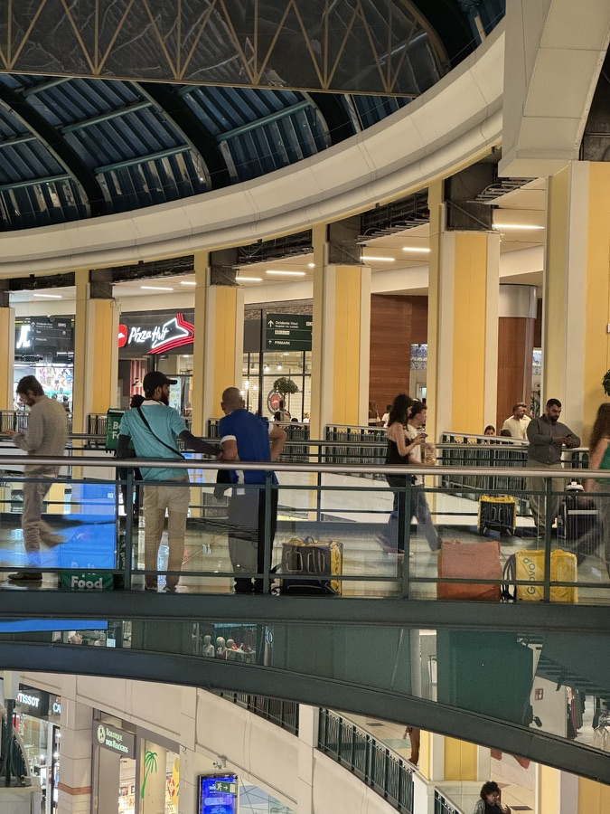
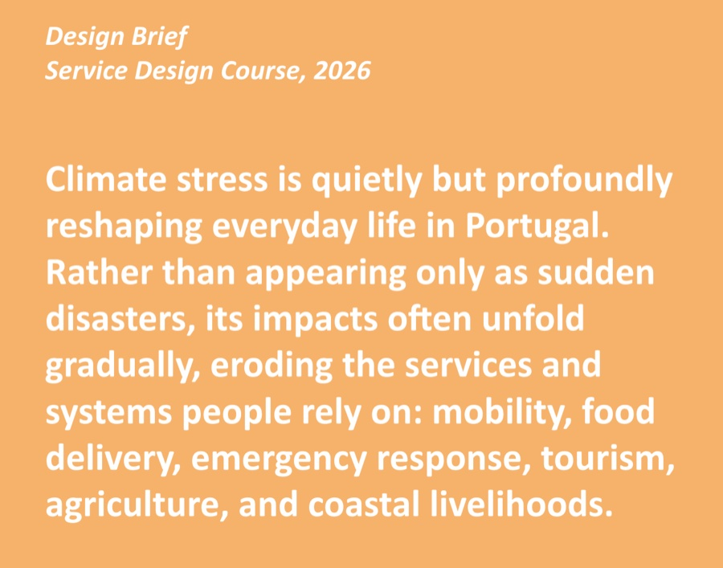
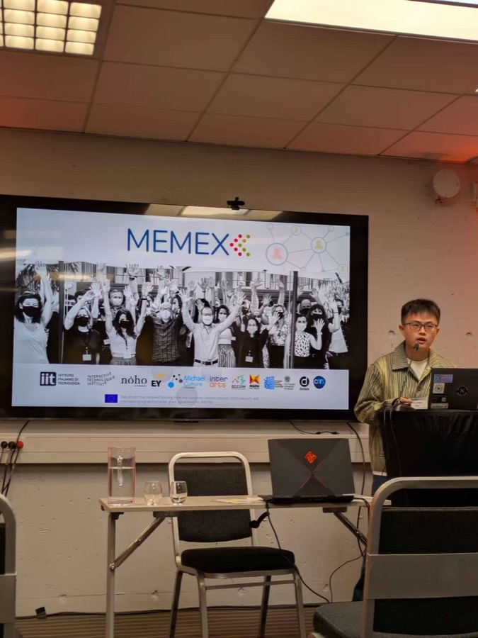

01
Labour Design
An examination of how design reshapes labour and reconfigures value, agency, and responsibility, connecting labour studies and political economy to inform technological alternatives across diverse domains.
I am a Lecturer in Computer Science at Northumbria University. My research lies at the intersection of critical computing, design politics, speculative design, and service design. I am particularly interested in the labour embedded in technological design, citizen participation in shaping technological futures, and design’s capacity to engage with real-world challenges.
I am currently based in the United Kingdom, with research experience spanning Portugal, the United States, and China. I hold a PhD in Digital Media (HCI) from Universidade de Lisboa, completed with Distinction and Honour (summa cum laude), and was affiliated with CMU/HCII through CMU Portugal. Before beginning my PhD, I trained and worked as a service and interaction designer in China. Across these contexts, my work on labour, inclusion, sustainability, and education has shaped an interdisciplinary, context-sensitive approach combining critical inquiry with participatory and speculative design.
My research mission is to expand the capacity of HCI and design to imagine, negotiate, and build more just and sustainable technological futures.
An examination of how design reshapes labour and reconfigures value, agency, and responsibility, connecting labour studies and political economy to inform technological alternatives across diverse domains.
A practice-led approach combining participatory, speculative, and interaction design practices to generate situated knowledge and develop concepts and methods grounded in real world.
A critical investigation of how AI, automation, and other emerging technologies reshape social and economic relations, with attention to citizen participation, social justice, and environmental sustainability.



Revisiting Worker-Centered Design: Tensions, Blind Spots, and Action Spaces
Speculating Migrant Possible Worlds through Magic Machines
Speculative Job Design: Probing Alternative Opportunities for Gig Workers in an Automated Future
“My Sense of Morality Leads to My Suffering, Battling, and Arguing”: The Role of Platform Designers in (Un)Deciding Gig Worker Issues
Advancing HCI and Design Methods to Empower Gig Workers
Uncovering Gig Worker-Centered Design Opportunities in Food Delivery Work
Mapping the Research Landscape of Gig Work for Design on Labour Research
Full list available through Google Scholar
Each * denotes one Special Recognition for Outstanding Review.
Interested in labor, technology, justice, or building better design methods? I'd like to hear from you.